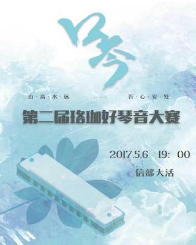
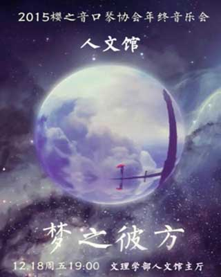
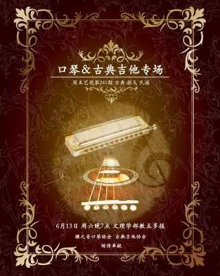
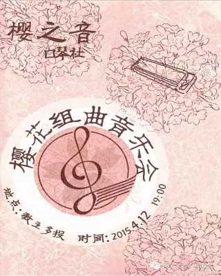
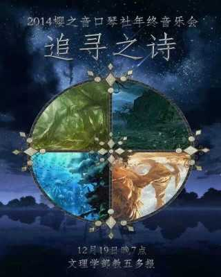
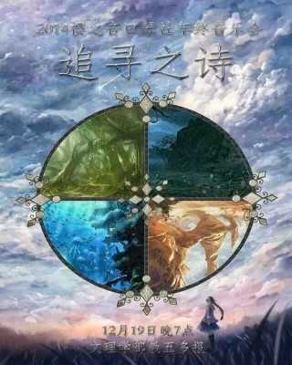
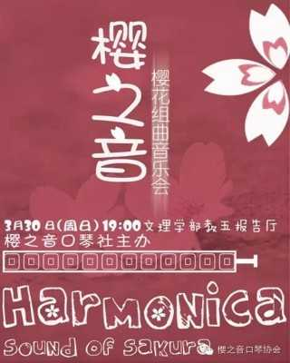
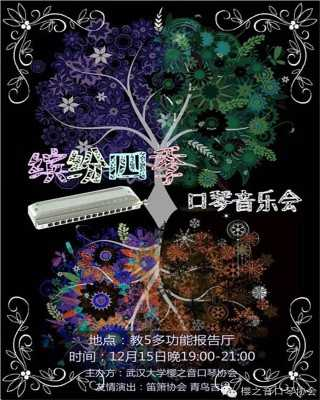
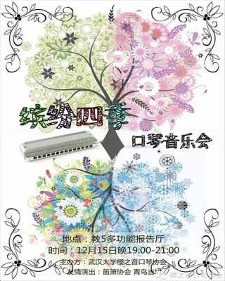

国内最流行的口琴种类
也是大部分同学选择的入门琴
通过推键获得半音，表达力完整
是绝大部分同学进一步学习的选择
仅十个孔，是最小的口琴
压音的效果使它非常适合蓝调音乐
每周安排两到三次，从晚上7点半左右开始至9点半，具体时间由各学部相关负责人安排，地点也是不同学部各有设置，文理学部为教五长廊，奥场，人文馆，工学部则为工操，信息学部是在信操主席台；活动内容是由学长学姐带领大家练习口琴~为了让新生更快的入门口琴学习，军训期间可能安排每晚都有小口琴角~
每周一次，周日下午2点到5点，地点是教五前的草坪或长廊，所有学部的同学聚集到一起来，会有半个小时到一个小时的口琴课程，由技术部部长负责教学，后期会带领大家逐渐学习用口琴演奏世界上各种各样风格和流派的音乐；剩下的时间大家自由练琴，我们会组织一些让大家互相认识的游戏或者活动以及一些表演。在后半学期将有组织大家练习合奏及准备音乐会等事项。
在12月中旬举办的口琴音乐会，是提供给新生表演舞台的社庆音乐会，将会由学长学姐带领愿意表演的同学登台表演~多彩有趣的音乐主题和难度平易近人的选曲，专为新生打造~
在四五月份举办的“珞珈好琴音”口琴比赛，是口琴社成员大展风采的舞台。比赛时，社员们自行组队，选择导师和曲目，然后便是用琴声一争高下。为社团的大家提供了合奏的机会与平台。